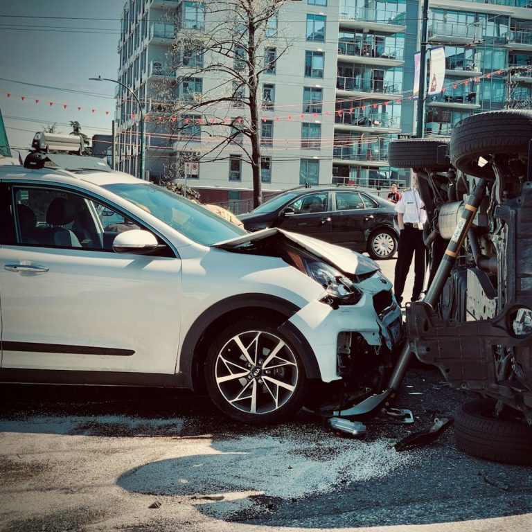
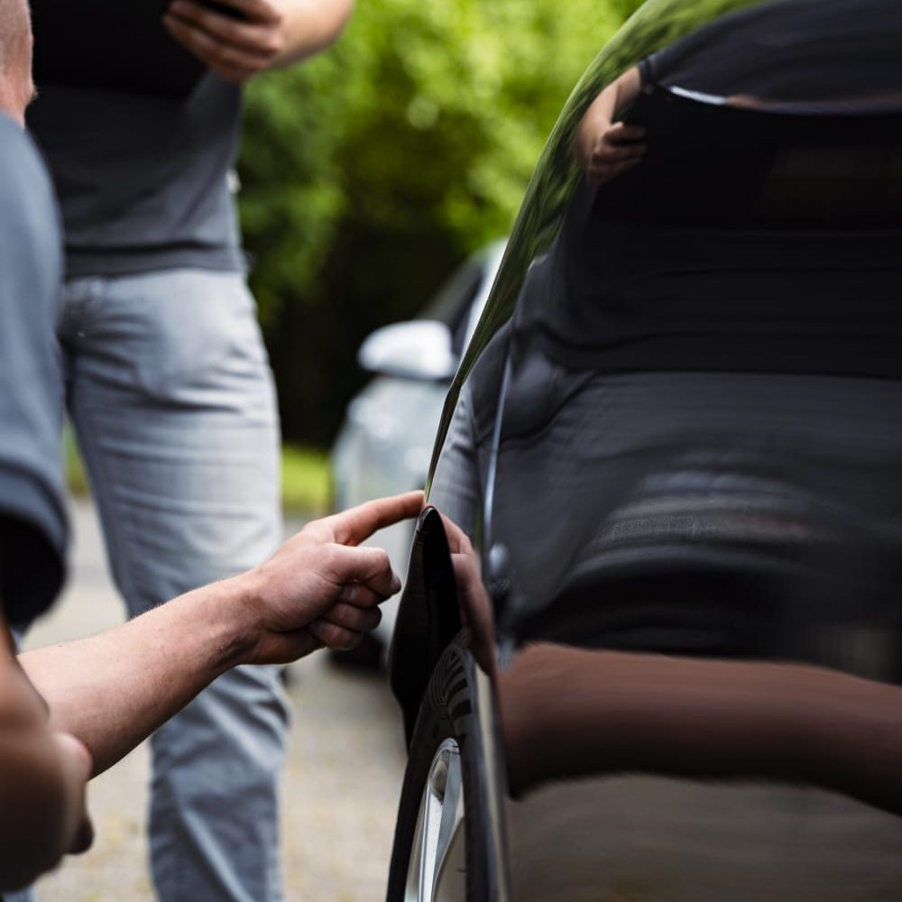
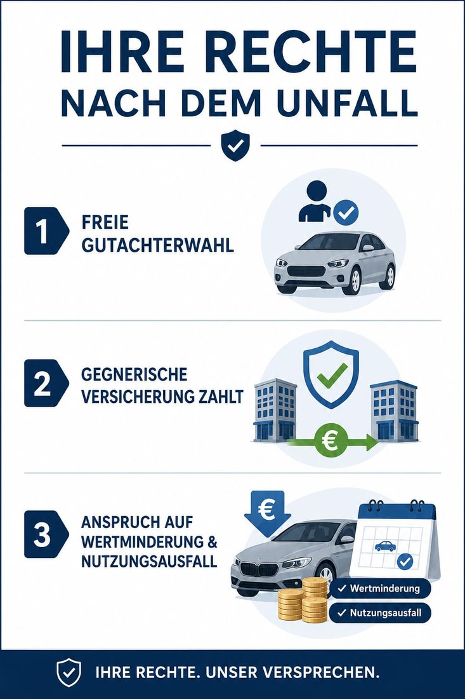

Neutral, vollständig und schnell. Wir dokumentieren Ihren Schaden so, dass Sie bei der Versicherung nichts verschenken.

Bei einem unverschuldeten Unfall haben Sie Anspruch auf einen unabhängigen Sachverständigen Ihrer Wahl. Die Kosten trägt in der Regel die gegnerische Versicherung – für Sie entstehen keine Gebühren.


Anruf oder WhatsApp – gern direkt mit ersten Schadenfotos.
Wir kommen zu Ihnen oder zur Werkstatt und erfassen alles.
Sie bekommen das fertige Gutachten – schnell und vollständig.
Bei einem unverschuldeten Unfall trägt die Kosten in der Regel die gegnerische Haftpflichtversicherung. Für Sie entstehen dann keine Gebühren.
Ja. Als Geschädigter haben Sie das Recht auf einen unabhängigen Sachverständigen Ihrer Wahl – Sie sind nicht an den Gutachter der Versicherung gebunden.
In den meisten Fällen können wir noch am selben oder nächsten Tag begutachten. Rufen Sie einfach an.
Fahrzeugschein, Ihre Kontaktdaten und – falls vorhanden – Unfallbericht und gegnerische Versicherungsdaten.
Je früher wir begutachten, desto besser Ihre Position. Melden Sie sich – wir kümmern uns.
Friedrich-Ebert-Straße 4 · 53919 Weilerswist · info@sv-hart-mauer.de
Kostenlos & unverbindlich. Antwort meist innerhalb 1 Stunde.